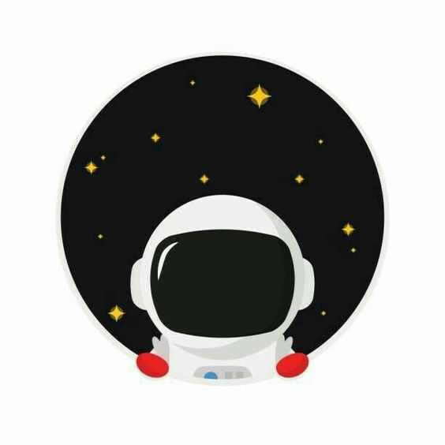

ShilNg
THE LITTLE PRINCE
The Little Prince lives in a little planet, where there are just a little rose and 3 little volcanoes. And he really love his little rose. Every morning, the first thing he does is clean up these three volcanoes and seeds of Baobab trees. Baobab tree is a type of huge tree, so if he does not clean up their seeds, the roots of Baobab tree will destroy his planet. And he takes care of his little rose.

But one day he and his little rose were mad at each other, because the little rose is too haughty and wants him to protect her by putting her in a glass cage. He was so upset at her so he decided to travel around the planets.
He has been on some planets, but people there are so weird, he thinks. And the last planet he wanted to come was the Earth. He fell into the desert, the first thing he met was a snake that wanted to bite him to death. He thought that the earth is so dangerous.
Then, he saw a lot of roses, and he felt disappointed because he always thinks that his little rose is the only one. But then he met with a wise fox, and the fox told the little prince that his rose is special because of the love he has given her and the time he has spent with her.

The last thing he met on Earth was a pilot, also is the author of this book, who told us his magical encounter with the Little Prince.
There is a sentence in this book that I really love, it goes with "All grown-up were once children... but only few of them remember it".

So it’s a little bit about this book I want to tell you. Hope that if you have free time, try to read it one time, Who knows, it might wake up your inner child.